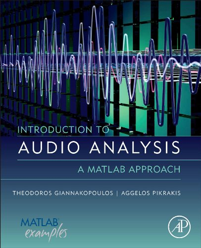

|
|
Matlab - Open Source
The following Matlab demos are open source and can be provided through the Mathworks File Exchange website. Most of the provided code is related to audio analysis methods and image processing. In the follow you will find a list of some of the demos. A complete list can be found at the Mathworks website.
Matlab Audio Analysis Library
 |
This is the MATLAB code of the book: Introduction to Audio Analysis, A MATLAB Approach, Theodoros Giannakopoulos and Aggelos Pikrakis, 2014, Academic Press, 9780080993881. It covers a wide range of audio analysis tasks including, audio processing, feature extraction, segment classification, segmentation and music information retrieval.
|
| Silence removal in speech signals |
This is a simple method for silence removal and segmentation of audio streams that contain speech.
|
| Image Processing GUI |
This is a GUI that demonstrates some basic image processing functionalities, e.g., color filtering, motion filtering, etc.
|
| Image retrieval - Query by Example Demo |
This demo provides a simple query by image example method, based on HSV values.
|
| Real Time Microphone and Camera data acquisition and audio-video processing |
This Matlab-code is a demo for real-time audio and image processing.
|
| Color Detection Using HSV Color Space (Training and Testing) |
The provided Matlab functions demonstrate a simple method for training and testing a color detection.
|
Matlab - Binaries (closed source)
The following links provide audio analysis demos written in Matlab. These demos are not available in the Mathworks website. In order to be able to run the Demos, one needs to have the Matlab Component Runtime installer installed.
| Speech - Music Discrimination |
This Demo is used for automatic segmentation and discrimination between speech and music of audio streams. The algorithmic parts of this demo have been published in journal [2] (see Publications). |
| Multi-class Audio Segmentation |
This Demo is used for multi-class audio segmentation with respect to audio stemming from movies. Therefore, not only speech and music are recognized, but 8 classes in total. The classes' definition was motivated by the audio signals met in movies, while special attention was given to violent content of movies and respective audio sounds (e.g. gunshots). |
|
|
|